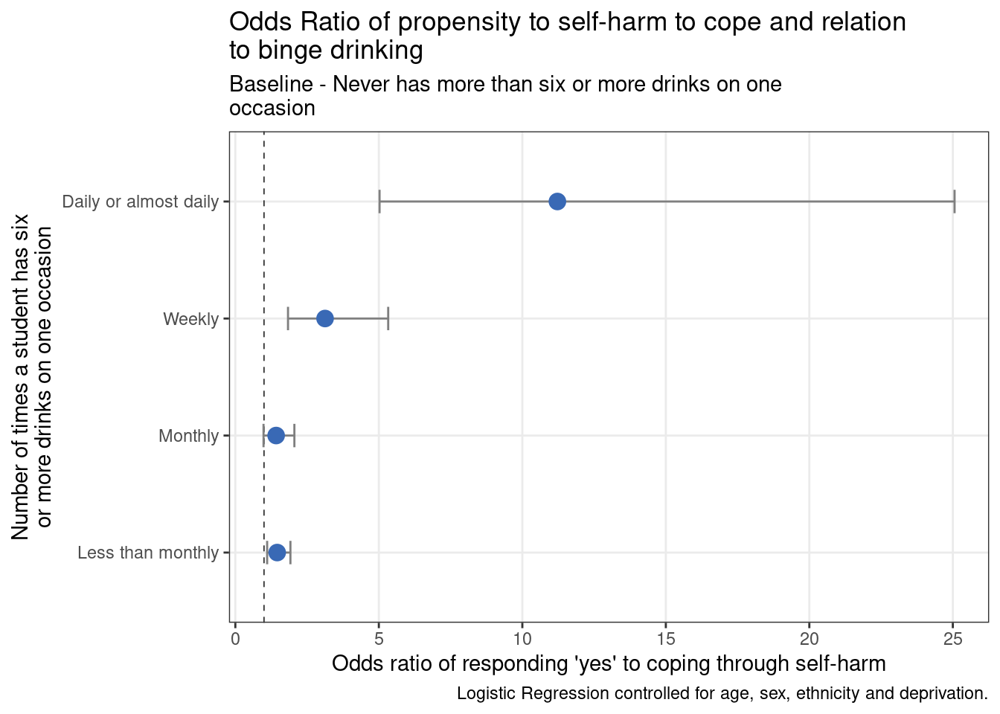

| answer | number | % |
|---|---|---|
| Daily or almost daily | 60 | 2.0 |
| Less than monthly | 850 | 28.4 |
| Monthly | 405 | 13.5 |
| Never | 1565 | 52.3 |
| Weekly | 115 | 3.8 |
Abstract
Young people are at greater risk of alcohol-related harm than adults, and excessive alcohol use during the teenage years is related to a range of health and social problems later in life.
In the data collected for the latest YPHWS cohort, there were 2995 students out of a total of 11151 students who answered the question “How often do you have six or more drinks on one occasion?” The breakdown of the responses is shown in the table below:
We analysed the relationship between a student’s propensity to binge drink to questions around whether students self-harmed as a coping mechanism to difficult situations, and a question pertaining to life satisfaction. We used these two questions as proxies for mental health outcomes.
We found that students who binge drinked for a significant amount of days are at a much greater propensity to self-harm, and have a poorer rated life satisfaction.
Methods
Through YPHWS, we asked questions pertaining to patterns of alcohol consumption, and can look at how these answers relate to mental health outcomes. One question asked students how often do you have six or more drinks on one occasion? This question acts as a proxy for the definition of binge drinking, with the number of units or drinks exactly defining binge drinking being slightly different depending on the source, but is usually defined by six units of alcohol for women and eight units for men in a single day as binge drinking, as seen in the government’s alcohol strategy.
For mental health outcomes, we look at students’ responses for by self-harm to the question “If you have a problem that worries you how do you cope?“ with the response being either a binary yes or no. As well, we will look at students’ responses towards questions pertaining to life satisfaction, which allowed students to choose from : low, medium, high, or very high.
For the analysis on frequency of binge drinking and propensity to self-harm to cope, we perform a simple logistic regression given the binary response variable. This is a form of regression analysis where the response variable is binary (i.e. Yes/No). From the logistic regression, we can evaluate what predictors have an effect on the outcome of the response variable, whilst we can also compare the predictability between explanatory variables using an odds ratio.
As the response variable for life satisfaction has more than two (i.e non-binary) choices, we instead perform a chi-squared test for this part of the analysis.
Additional details on the methodology
The analysis does not confirm causation. Predictors can only be linked to response variables (particularly if they are significant). It cannot be said for certain whether the predictor causes the response.
In the table below, there is a baseline group in which other groups are compared against (baselines are clarified in the examples), from which groups can be claimed to be more or less likely to have a certain characteristic (e.g. to have a mental health condition). Each group has an associated confidence interval, in which we can be 95% certain the real value lies in. Groups can be determined to be significantly different from one another if the intervals do not overlap, or the baseline group does not fall within the groups interval.
A statistically significant relationship between the explanatory and response variables is outlined when the p-value is lower than the 0.05 threshold. In this case, the p-value is small enough to reject the null hypothesis of the conducted test, which is that there is no relationship between the variables.
Results
Self-Harm

The results showed that:
Students who binge drink less than monthly are 1.5 times more likely to self-harm compared to those who never binge drink. This is statistically significant.
Students who binge drink around once a month are 1.4 times more likely to self-harm compared to those who never binge drink. However, this is not statistically significant, although it is on the borderline of being significant.
Students who binge drink weekly are 3.1 times more likely to self-harm compared to those who never binge drink. This is statistically significant.
Students who binge drink daily or almost daily are 11.2 times more likely to self-harm compared to those who never binge drink. This is statistically significant.
More detailed results tabulated
| Characteristic | OR1 | 95% CI1 | p-value |
|---|---|---|---|
| alcohol_6more | |||
| Never | — | — | |
| Less than monthly | 1.46 | 1.11, 1.92 | 0.007 |
| Monthly | 1.42 | 0.98, 2.05 | 0.062 |
| Weekly | 3.13 | 1.81, 5.27 | <0.001 |
| Daily or almost daily | 11.2 | 5.05, 25.3 | <0.001 |
| 1 OR = Odds Ratio, CI = Confidence Interval | |||
Life Satisfaction
| Student's responses to how satisfied they are with their life | Never | Less than monthly | Monthly | Weekly | Daily or almost daily |
|---|---|---|---|---|---|
| low | 382 | 235 | 112 | 43 | 47 |
| medium | 395 | 252 | 135 | 22 | 4 |
| high | 557 | 282 | 119 | 31 | 3 |
| very high | 229 | 79 | 41 | 17 | 7 |
The table above shows cross tabulation of student life satisfaction and propensity to binge drink, along with colour bars representing vertical proportions.
Visually, we can already identify that students who responded that they binge drink daily or almost daily has the largest percentage reporting a low life satisfaction at 77%, with more than twice the percentage of students in the next frequent binge-drinking category (38%).
Through the chi-squared test, we find a highly statistically significant relationship, indicating strong evidence to suggest an association between propensity to self-harm when coping and binge-drinking/excessive alcohol consumption.
Conclusions
These results highlight the relationship of two negative mental health outcomes: propensity to self harm as a coping mechanism and quality of life satisfaction in relation to binge drinking. Not only are these recognised biological and physiological health risks with regards to binge drinking, but this can extend towards psychiatric health issues as well.
Adolescence is a critical period of risk for binge drinking, and is often the period where many start the behaviour. Targeting the at-risk population of student binge-drinkers should be a core component of CYP public health strategy. The transition from adolescence to young adulthood is a critical developmental period, and encouraging at risk students to reduce alcohol consumption can reduce incidence of many harmful patterns of alcohol use and associated negative externalities in young adulthood, and can reduce attendances to A&E departments and hospitalisations for alcohol-related conditions.